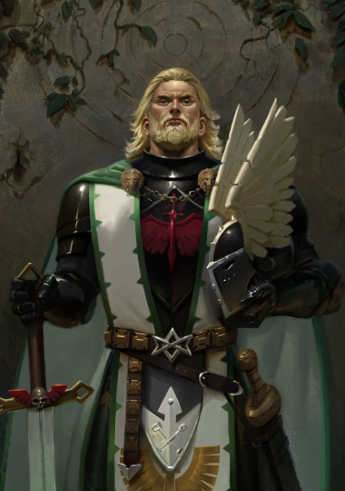
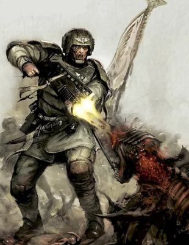
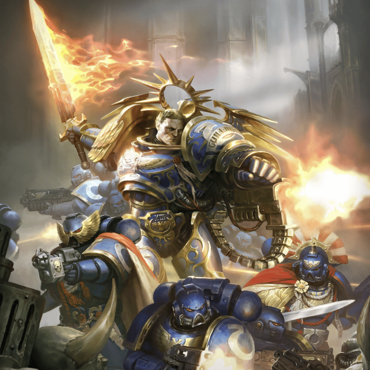
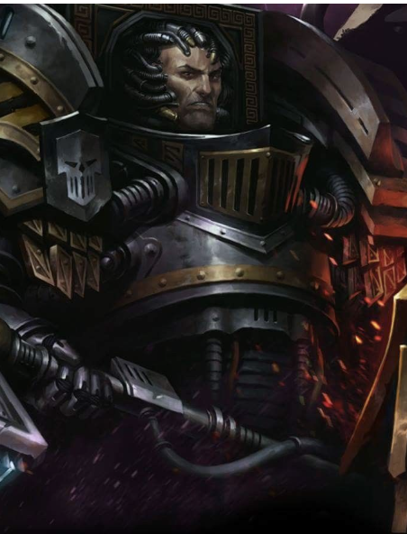
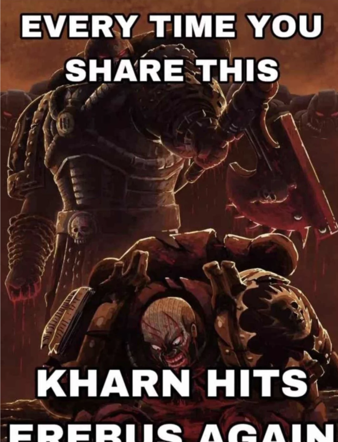

<!DOCTYPE html>
<html lang="en">
<head>
  <meta charset="UTF-8" />
  <meta name="viewport" content="width=device-width, initial-scale=1.0" />
  <title>Warhammer 40K Lore & Novels</title>
  <link rel="stylesheet" href="GLOBAL.css" />
</head>
<body>
  <header>
    <h1> Warhammer 40K Lore & Novels</h1>
    <nav>
      <ul>
        <li><a href="Gallery.html">Galleries</a></li>
        <li><a href="Tutorial.html">Painting Your Miniature!</a></li>
      </ul>
    </nav>
  </header>

  <main>
    <section class="novel-intro">
      <h2>The Grimdark Chronicles</h2>
      <p>Explore original stories and lore fragments inspired by the Warhammer 40K universe. From the halls of Terra to the cursed stars of the Eye of Terror, these tales echo the eternal war of the 41st millennium.</p>
    </section>

    <section class="novel-entry">
      <h3>The Lion's Reckoning</h3>
      <p><em>"I take no issue with expediency," the Lion assures him, and lowers his blade. "I am not the Wolf King, to growl and defend my kill."</em></p>
      <p>A strange expression crosses the other man's face, and the hunter will never see that obnoxious savage's face again. The Lion turned, his cloak trailing ash, and walked into the storm of war once more.</p>
    <br/>
      
      </section>

    <section class="novel-entry">
      <h3>Echoes of Cadia</h3>
      <p>The sky cracked open as the last bastion of Cadia fell. Ervin watched the newcomers emerge from the Verdis Elysia tunnel, their armor scorched and tagged with the sigils of forgotten chapters. Acid burns marked their plates, but their resolve was unbroken.</p>
   <br/>
      
      </section>
    
    <section class="novel-entry">
    <h3>Indomitus Crusade</h3>
      <p>"Children of the Imperium." The voice was very deep and spoke with such clarity that some soldiers looked almost overwhelmed. The Primarch looked through the rows of men and women and finally continued when he was sure that every single person in the room was fully attentive.


"The Great Enemy, who already invaded our beloved Imperium thousands of years ago, has returned. The galaxy has been torn apart by a Great Rift, an unholy wound in reality itself that has claimed the blood of thousands of worlds in one swoop." As Guilliman spoke, he also looked to the giant screen on the backside of the chamber, which allowed him to share his message with billions of other soldiers who were on ships in orbit around Terra.


"I am returning after 10,000 years, to a world that is no longer mine. I am returning to an Imperium overrun by enemies." Suddenly, the Primarch struck the lectern with such force that he left a large indentation in the metal. "Daemons, heretics, xenos - they all believe they can just destroy the glory that we call humanity! ENOUGH! We will strike back!"


The Primarch now spread his arms.


"Just as you have served my father all your life as a bulwark against the terrors of the galaxy, so now you will accompany me on this journey."


Cheers erupted among the soldiers, and some were so taken by the Primarch's charismatic aura that they burst into tears.


"We will not forgive! We will not forget! I will not rest until I hold Abbadon's head in my hands and his corpse is impaled on the spires of the Imperial Palace!" The Primarch's voice had the intensity of a Titan blowing his horn to herald battle. Many of the soldiers began to tremble with excitement.


Finally, Guilliman drew his sword from his back and extended it upward, whereupon blazing flames erupted from the blade.


"FOR THE EMPEROR! FOR MANKIND!"


"And these will not be the last sacrifices you will demand, Father. I wonder how many more tortured souls you can endure... and when you will let us finally go", thought Guilliman, son of the God-Emperor of Mankind to himself as ecstatic cheers filled the chamber.</p>
   
    </section>
    <section>
    <h3>Sieg of Terra - Perturabo's disappointment</h3>
      <p>"It is over," said Perturabo. "Horus has given this battle to sorcerers and beasts. The war of Legions is over. Mortarion comes here to take this place. He and what he has become is what this war is now. He comes at the will of Horus to be the agent of what will happen."</p>
   
    </section>
<section>
    <h3>Kharn's fury</h3>
  <p>First blood? Erebus asked.

The axe in Kh�rns hand was Gorechild, toothed by mica-dragons and once thrown from the hands of a primarch. Hed chained it to his bare wrist in imitation of the Nucerian gladiators, whose bones hed seen and honoured mere days before at Deshelika Ridge.

The captain was stripped to the waist, as were all the warriors present.

Sanguis extremis, Kh�rn said. Some of the crowd breathed in, showing their shock as the humans they once were. Others laughed or cheered. More fists beat against chests.

Erebus regarded Kh�rn with cold, composed eyes. Several seconds beat in silence, before the Word Bearers lips curled in a soft, indulgent smile.

Bold, Kh�rn. Are you s

Gorechild revved for the first time since its rebirth, eating air with the throaty snarl of an apex predator. That interruption was the only answer Kh�rn would give, and Erebus raised his crozius in reply.

Come then.

Three blows. The first: Kh�rn smashed the maul aside with the flat of his new axe. The second: he cannoned a headbutt into Erebuss nose, breaking cartilage with a wet crunch. The third: Gorechild tasted first blood, ripping across the Chaplains chest, carving a canyon of flesh over the dense subdermal armour of the warriors black carapace torso implant.

All of this happened in the time it took Erebus to blink. No one could move as fast as Kh�rn moved. No one human, and nothing mortal. The Chaplain threw himself backwards, crozius up high to guard.

Kh�rn walked forwards, gunning Gorechilds trigger. The crowd was silent now. This was a Kh�rn theyd never seen  not even on the field of battle.

Another three blows, delivered with the same blinding speed. Erebuss maul clang-skidded across the deck; he took a fist to the throat and a boot to the stomach, knocking him back with enough force to send him crashing onto the bloodstained iron grillework.

He looked up at Kh�rn from the ground and saw his death in the World Eaters eyes. Hed never seen this before, not in any of the paths of possibility. It couldnt be happening. It couldnt end like this. He was Destinys Hand.

Kh�rn looked down at him, clearly allowing time for the Chaplain to recover his crozius.

Get up.

Erebus rose, his mace in his hands again. He attacked this time, showing the speed and skill that had allowed him to hold his own against Lucius of the Emperors Children, and Loken of the old Luna Wolves. His crozius trailed killing lightning, buzzing furiously as it thrummed through empty air again and again. Kh�rn weaved aside from every blow, quicker than a blink, surely quicker than muscles could ever allow.

Their weapons crashed together. Kh�rn had parried the last blow. Erebus expected accusation in the World Eaters eyes, or surely anger. He saw neither. Worse, he saw a bored indulgence. The captain even sighed.

Three more blows. Erebus was on the deck before he knew how. Pain flared across his chest, hot and urgent, matching the thick throb of his smashed face. He reached to touch the wound with a hand that was no longer there.

His hand. His hand was on the deck, several metres away. Blood leaked from the chewed veins nestled in the meat of his severed limb. Turning unbelieving eyes downwards, he saw where his arm now ended at the wrist.

Going to need an augmetic for that, Kargos said from the crowd. Several warriors laughed, but few with any real relish. They were too fascinated by what was unfolding.

Erebus looked up at Kh�rn again. He was just waiting.

"Get up."

The Chaplain rose. Kharn didn't wait this time, the blows were bloody blurs of whining motors and tearing chain-teeth. Pain bloomed across Erebus's body, and he was face-down on the deck again before hed managed to fully rise from the last time. Even without his armour's pain nullifiers and chemical stimulants, Erebus suppressed the pain by whisper-chanting a sacred mandala. Kharn interrupted it. "Get up."

Erebus actually tried, but he froze when he felt Gorechilds teeth against his spine. The idling chainblade was purring and breathing out its promethium fuel-stink, the axes stilled teeth kissing Erebuss vertebrae.

Never, not even in fragmentary glimpses, had he foreseen this duel.

It couldnt end like this. He couldnt die here. There was so much to do. Signus Prime. Terra herself. In all the Ten Thousand Futures, Erebus had seen himself fighting the Long War to the very last.

The very same second Erebus reached for the ritual knife at his belt with his remaining hand, Kh�rn pulled the chainaxes trigger.

There should have been a scream. Everyone expected it. Every warrior present waited to hear the First Chaplain of the Word Bearers shriek as Gorechild bit into his flesh. But there was nothing beyond the rotating whine of an axe blade chewing empty air.

No one seemed surprised at the display of Word Bearers sorcery. Even fewer were surprised at the cowardice. Kh�rn turned from the blood marking the deck, leaving the circle without a word.</p>
   <br/>
  
    </section>
      <nav>
     <a href="Index.html">Click here to return to homepage</a>
      </nav>
          </main>
</body>
</html>
